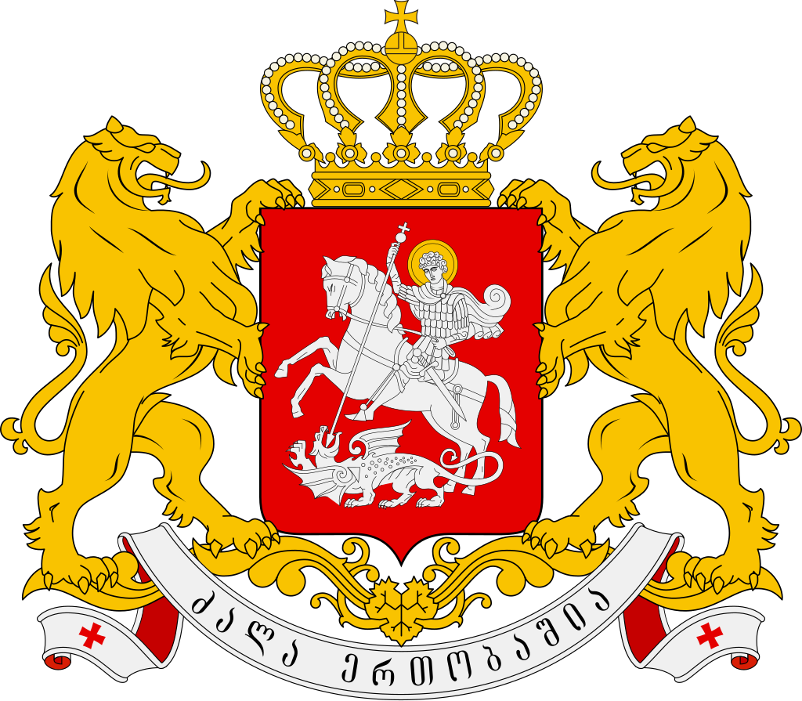
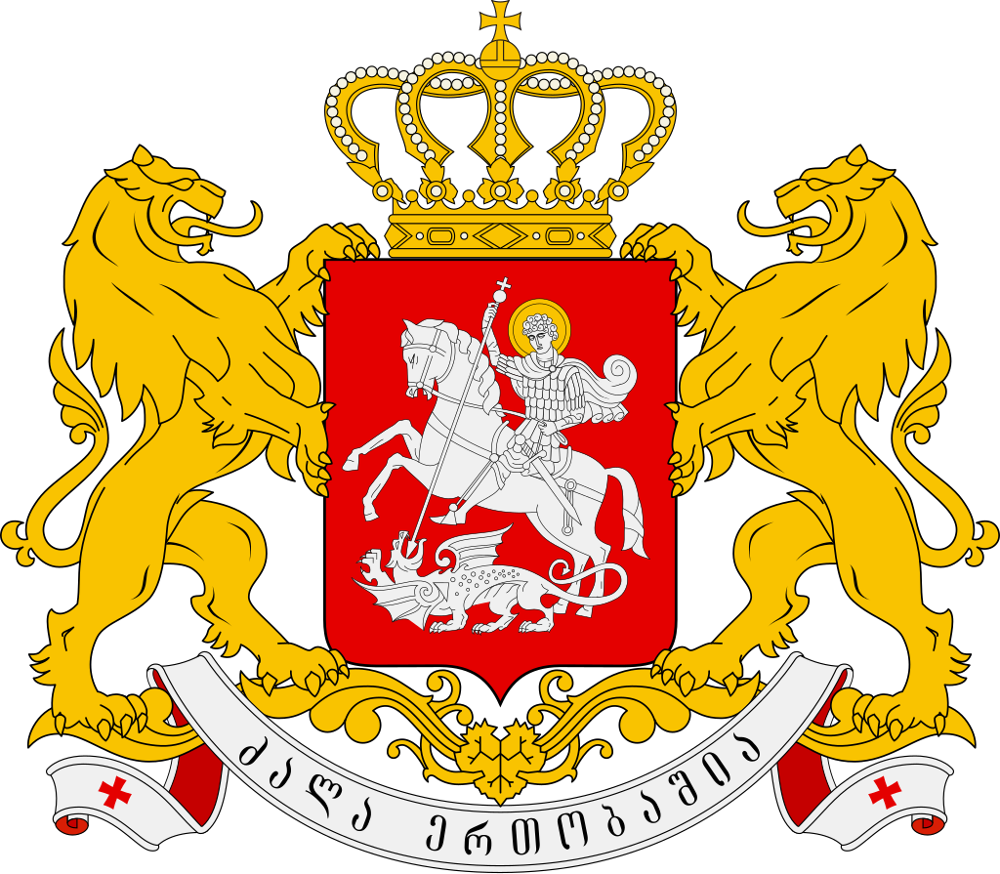

საქართველო (აფხ. Қырҭтәыла) — სახელმწიფო ევრაზიაში, კავკასიაში, შავი ზღვის აღმოსავლეთ სანაპიროზე. ესაზღვრება ჩრდილოეთიდან რუსეთი, სამხრეთიდან თურქეთი და სომხეთი, და სამხრეთ-აღმოსავლეთიდან აზერბაიჯანი. ტრანსკონტინენტური ქვეყანა სამხრეთ-აღმოსავლეთ ევროპისა და დასავლეთ აზიის გასაყარზე მდებარეობს, თუმცა სოციოპოლიტიკურად და კულტურულად ევროპის ნაწილია.
თანამედროვე საქართველოს ტერიტორია მუდმივად დასახლებული იყო ადრეული ქვის ხანიდან მოყოლებული. კლასიკურ ანტიკურ ხანაში აყვავდა ადრეული ქართული სახელმწიფოები კოლხეთის სამეფო და იბერია, რამაც დასაბამი მისცა საერთო ქართულ კულტურასა და სახელმწიფოებრიობას. ქრისტიანობა გაბატონდა ადრეული IV საუკუნიდან; ქვეყანა გაერთიანებული მონარქია გახდა 1008 წელს. თუმცა მას შემდეგ საქართველომ აღორძინებისა და დაცემის რამდენიმე პერიოდი განვლო, სანამ XV საუკუნეში რამდენიმე მცირე პოლიტიკურ ერთეულად დაიშლებოდა. იმპერიულმა რუსეთმა ქართული მიწები ნაწილ-ნაწილ დაიპყრო 1801-1878 წლებში. რუსეთის რევოლუციის შემდგომ აღდგენილი დამოუკიდებელი ქვეყანა — საქართველოს დემოკრატიული რესპუბლიკა (1918-1921) ბოლშევიკების მსხვერპლი გახდა და 1922 წლიდან საბჭოთაკავშირის ნაწილად იქცა.
საქართველომ დამოუკიდებლობა 1991 წელს კვლავ მოიპოვა. სამოქალაქო ომისა და მკაცრი ეკონომიკური კრიზისით გამოწვეული ქაოსური პერიოდის შემდეგ ქვეყანა შედარებით სტაბილური გახდა 1990-იანი წლების ბოლოს. 2003 წელს მოხდა „ვარდების რევოლუცია“. საქართველოს მთავრობის მისწრაფება ნატოში გაწევრიანებასა და გამოყოფილი ტერიტორიების დაბრუნებისკენ რუსეთთან ურთიერთობას მკვეთრად აუარესებს. პარალელურად მიმდინარე სწრაფმა ეკონომიკურმა განვითარებამ ქვეყანა მნიშვნელოვანი ევრაზიული ენერგეტიკული პროექტების ეპიცენტრი გახადა.
საქართველო წარმომადგენლობითი დემოკრატიაა, ორგანიზებული როგორც უნიტარული, საპარლამენტო რესპუბლიკა. ქვეყანა ამჟამად რამდენიმე საერთაშორისო ორგანიზაციის წევრია, მათ შორის გაეროს (31 ივლისი, 1992),[9] ევროპის საბჭოს (27 აპრილი, 1999), სუამის, მსოფლიო სავაჭრო ორგანიზაციისა და შავი ზღვის ეკონომიკური თანამშრომლობის. საქართველო ასევე მიისწრაფვის ევროპის კავშირში ინტეგრაციასა და ჩრდილოატლანტიკურ ალიანსში გაწევრიანებას.